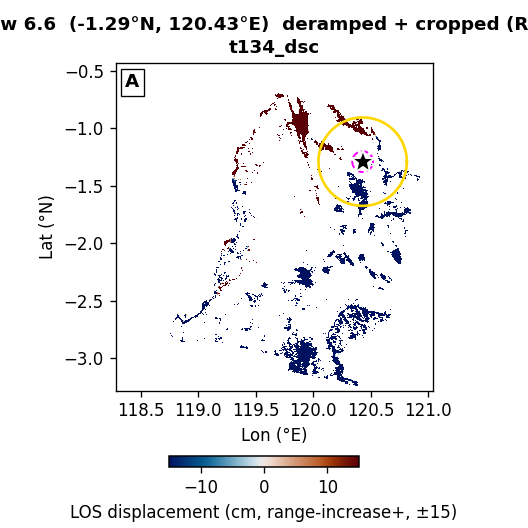
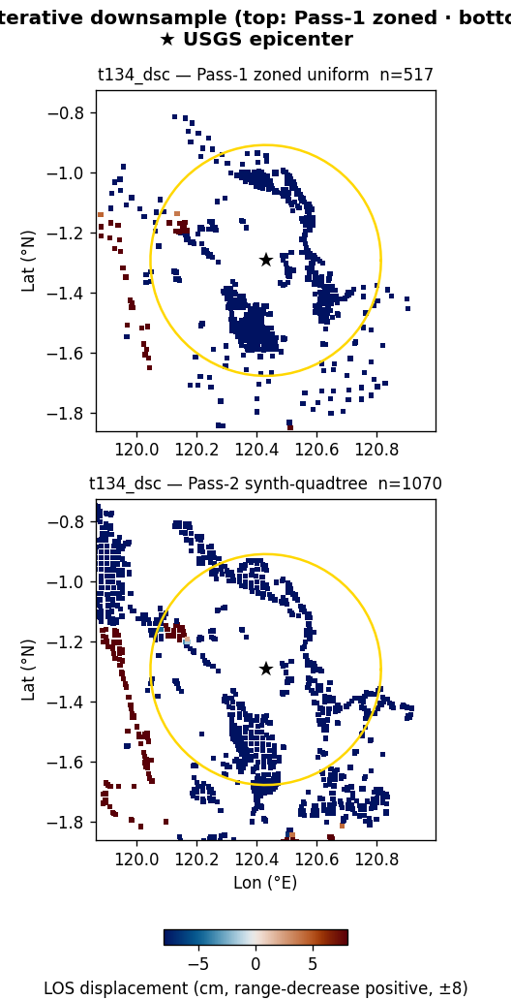
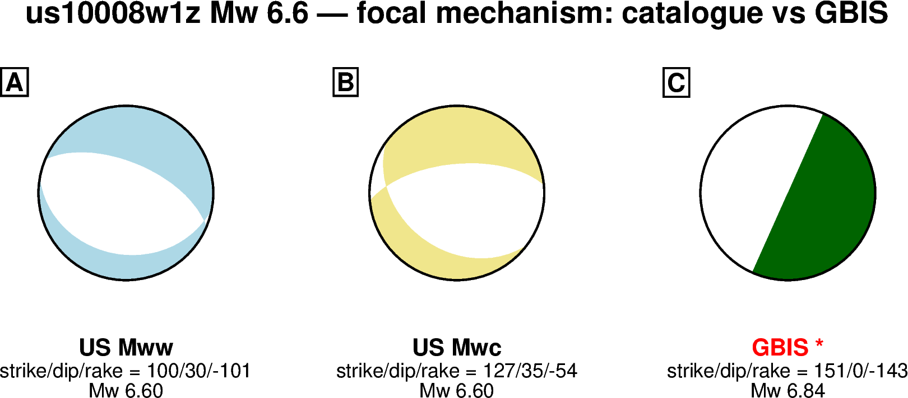
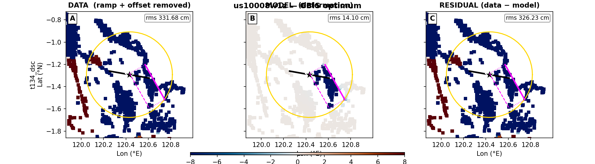
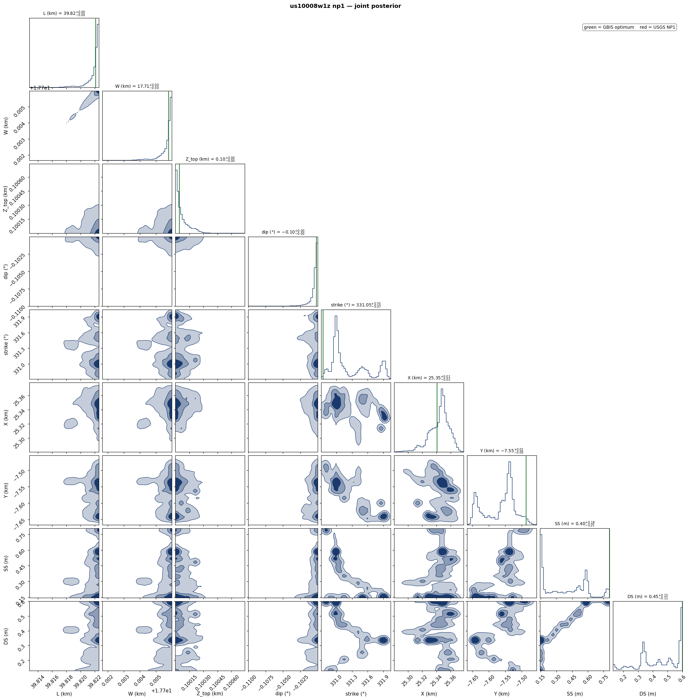
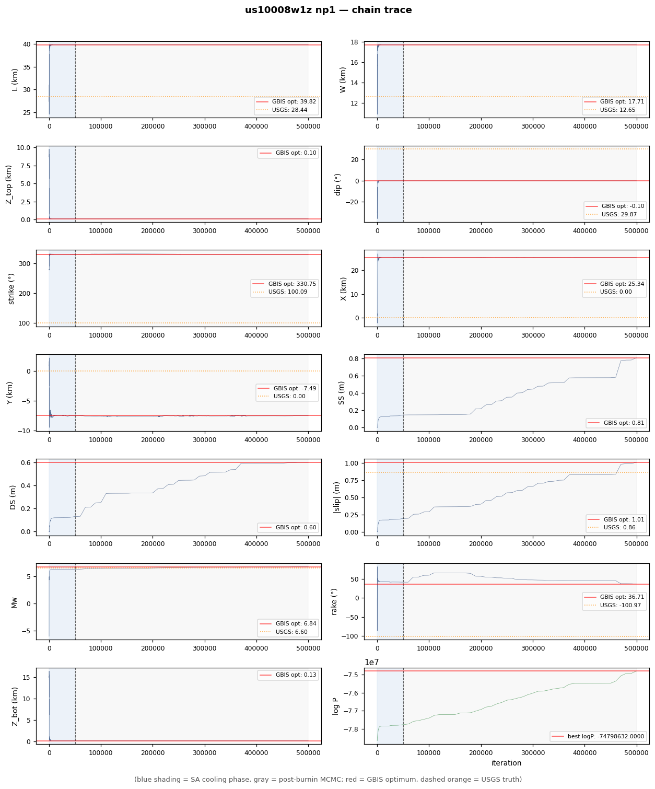

| parameter | start | lower | upper | USGS NP1 / W&C | GBIS optimum |
|---|---|---|---|---|---|
| L (km) | 28.44 | 11.38 | 39.82 | 28.44 | 39.82 |
| W (km) | 12.65 | 5.06 | 17.71 | 12.65 | 17.71 |
| Z_top (km) | 8.85 | 0.10 | 30.00 | 8.85 | 0.10 |
| dip (°) | 29.9 | 0.1 | 64.9 | 29.9 | 0.1 |
| strike (°) | 100.1 | 40.1 | 160.1 | 100.1 | 150.7 |
| X (km) | 0 | -28.4 | 28.4 | 0 | 25.34 |
| Y (km) | 0 | -28.4 | 28.4 | 0 | -7.49 |
| SS (m) | -0.164 | -2.58 | +2.58 | -0.164 | -0.807 |
| DS (m) | -0.845 | -2.58 | +2.58 | -0.845 | -0.601 |
| derived | USGS | GBIS | |||
| |slip| (m) | 0.861 | 1.006 | |||
| rake (°) | -101.0 | -143.3 | |||
| Mw | 6.60 | 6.84 | |||
| Z_bot (km) | 15.15 | 0.13 | |||
| 震源深度 / centroid depth (km) | 12.00 | 0.12 | |||
震源深度对比：USGS = 报告的震源（hypocenter）深度；GBIS = 断层质心深度 (Z_top+Z_bot)/2。
Note: GBIS optimum = single MAP sample reported by GBIS in invResults.model.optimal, NOT a chain median.



Red truth lines = USGS NP1 (W&C scaled). Density contours = 39%, 68%, 95% credible regions.

Blue shading = SA cooling (first 50k iterations). Gray = post-burnin MCMC. Red horizontal = GBIS reported optimum. Dashed orange = USGS NP1 W&C value.